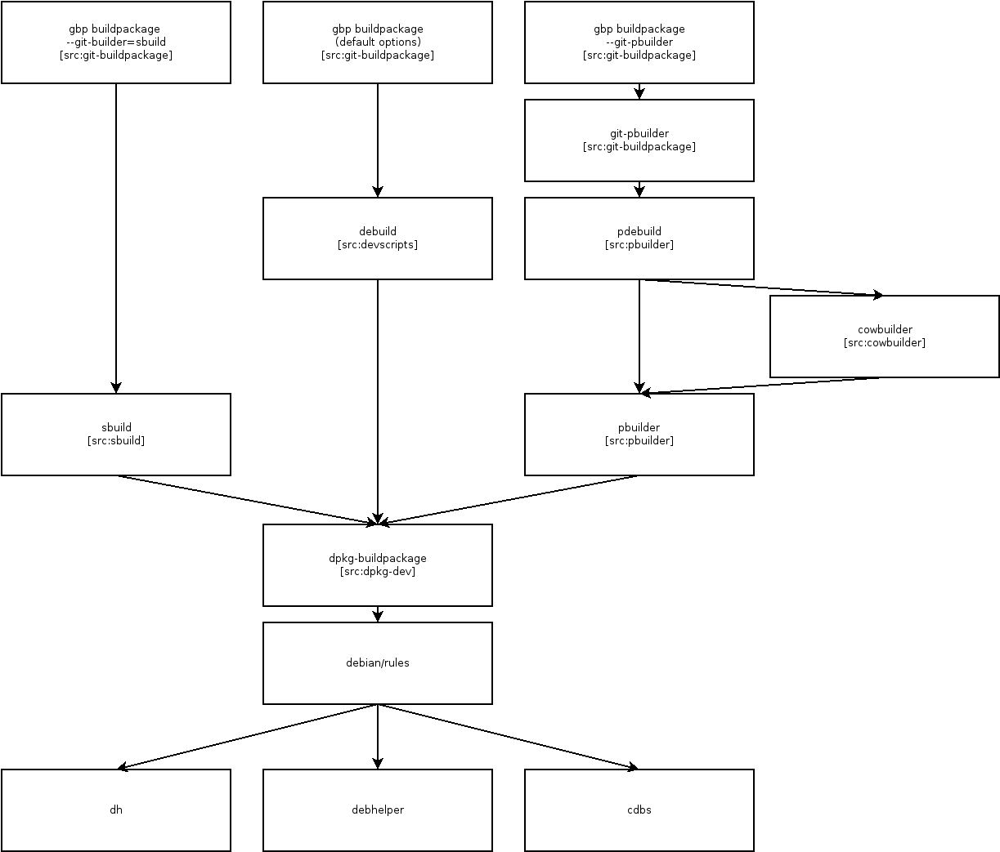
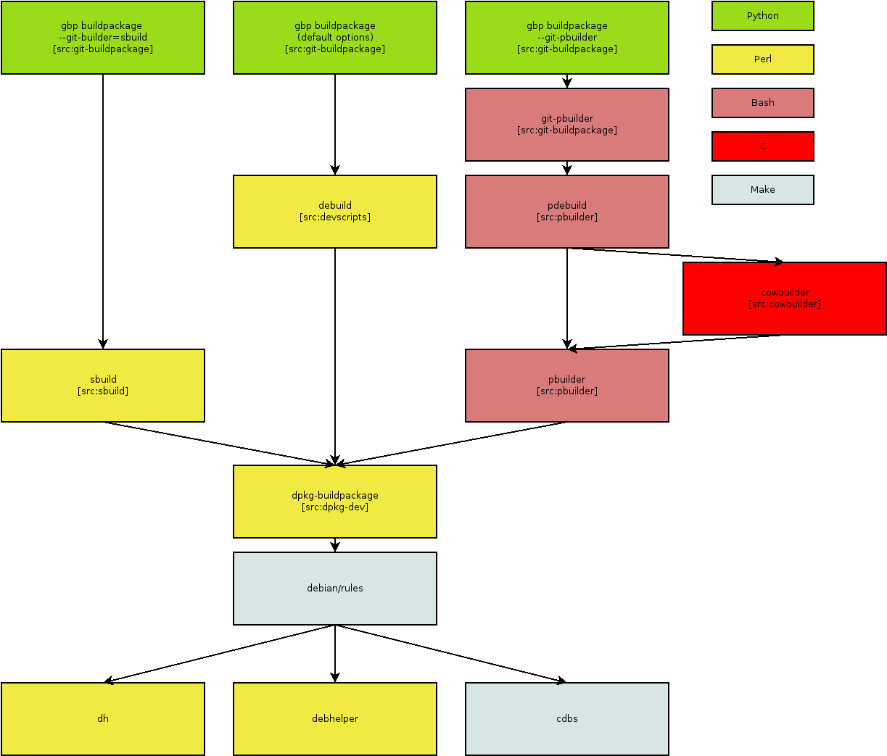

Personally, I find the packaging tools which are available in Debian far too complex. To better understand the options we have, I created a diagram of tools which are frequently used, only covering the build step (i.e. no post-build quality assurance checks or packaging-time helpers):

When I was first introduced to Debian packaging, people recommended I use
pbuilder. Given how complex the toolchain is in the pbuilder case,
I don’t understand why that is (was?) a common recommendation.
Back in August 2015, so well over a year ago, I switched to
sbuild, motivated by how much simpler it was to implement ratt
(rebuilds reverse build dependencies) using sbuild, and I have not looked
back.
Are there people who do not use sbuild for reasons other than familiarity? If so, please let me know, I’d like to understand.
I also made a version of the diagram above, colored by the programming languages in which the tools are implemented. The chosen colors are heavily biased :-).
To me, the diagram above means: if you want to make substantial changes to the Debian build tool infrastructure, you need to become an expert in all of Python, Perl, Bash, C and Make. I know that this is not true for every change, but it still irks me that there might be changes for which it is required.
I propose to eliminate complexity in Debian by deprecating the pbuilder toolchain in favor of sbuild.